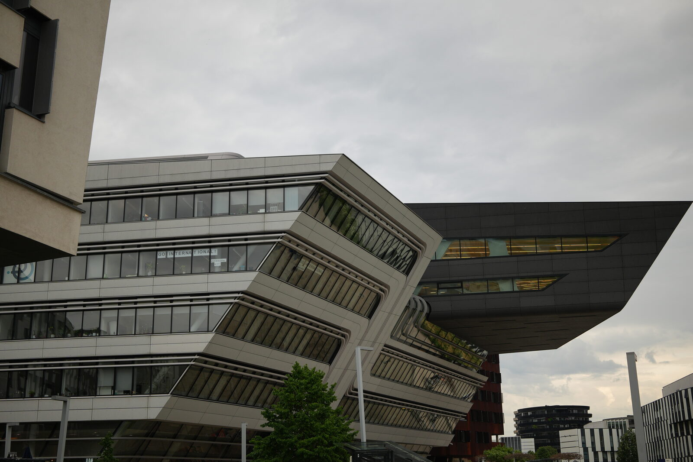
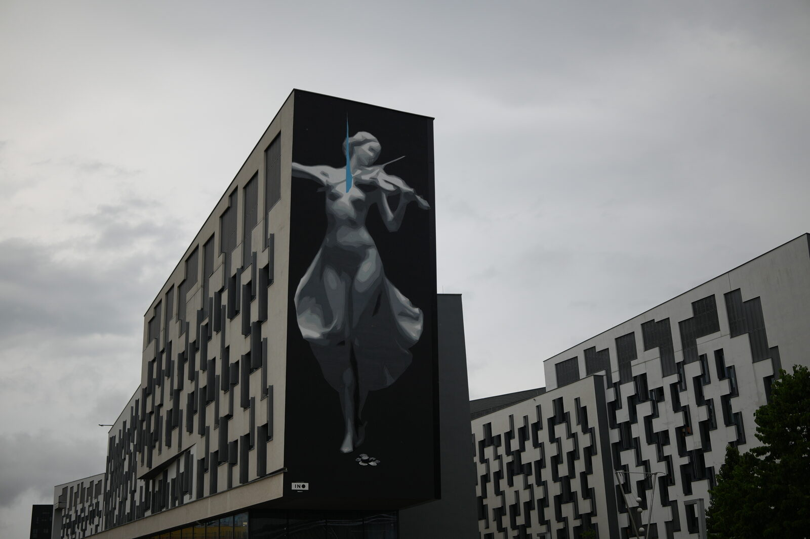
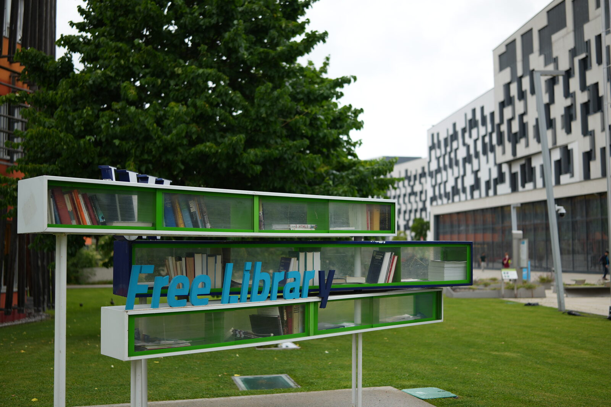
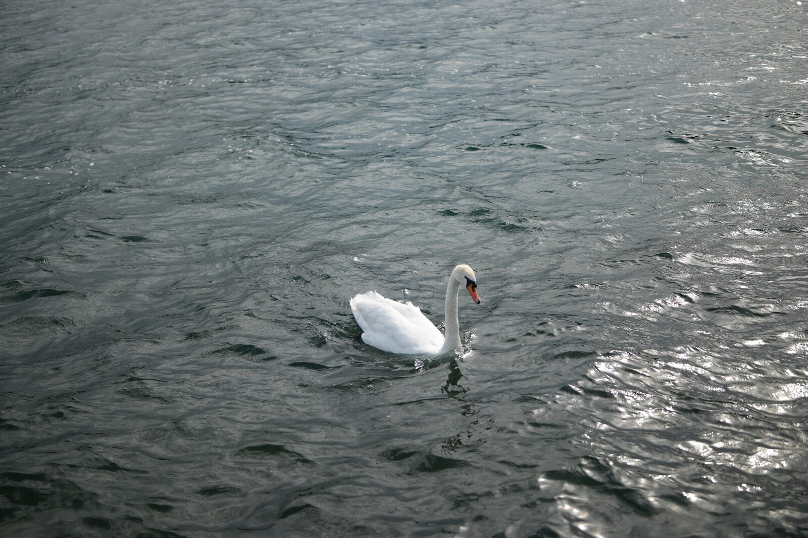
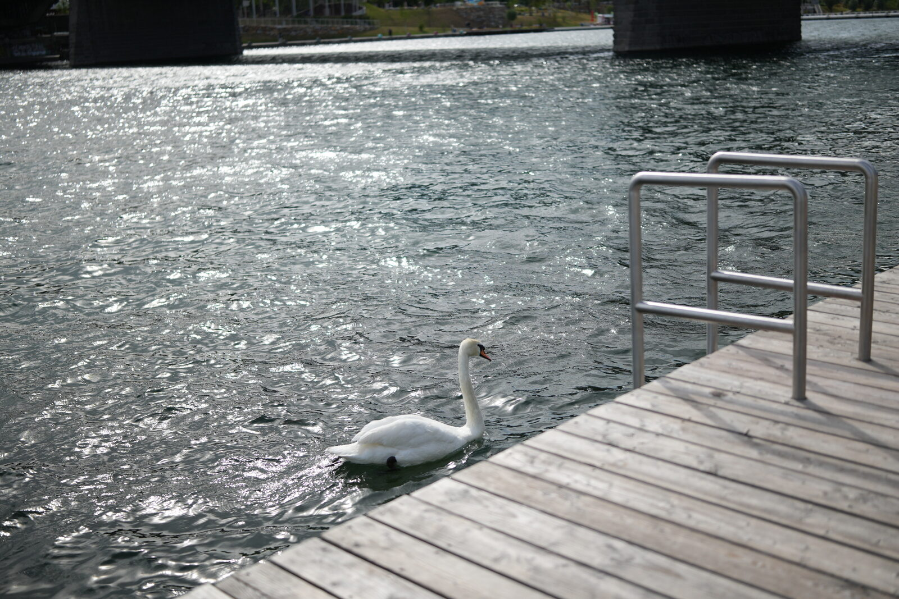
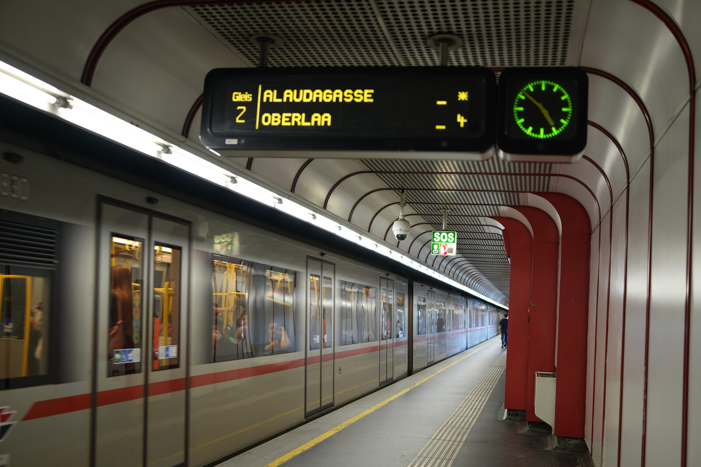
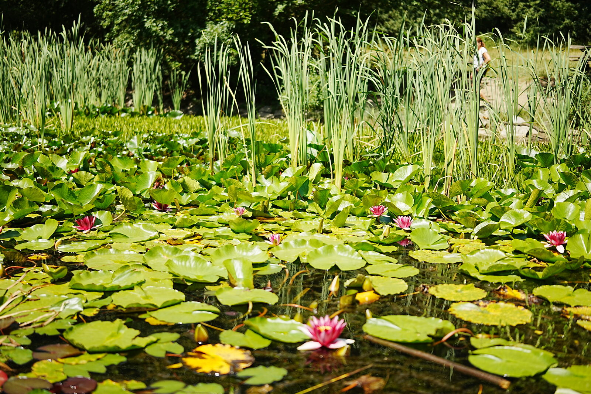
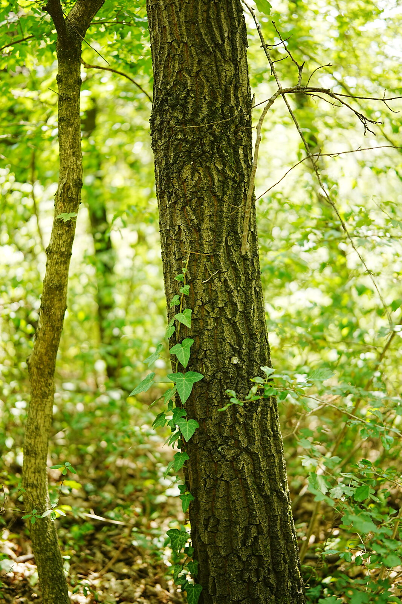
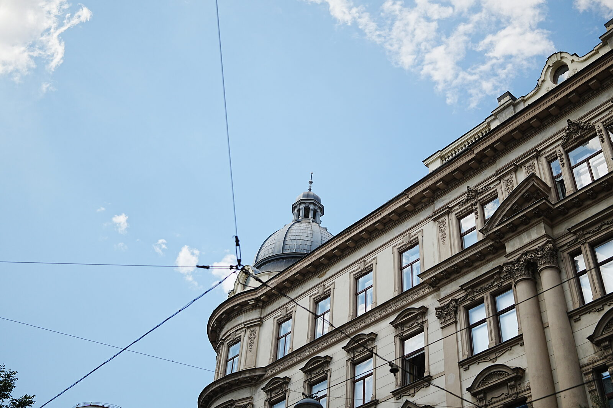
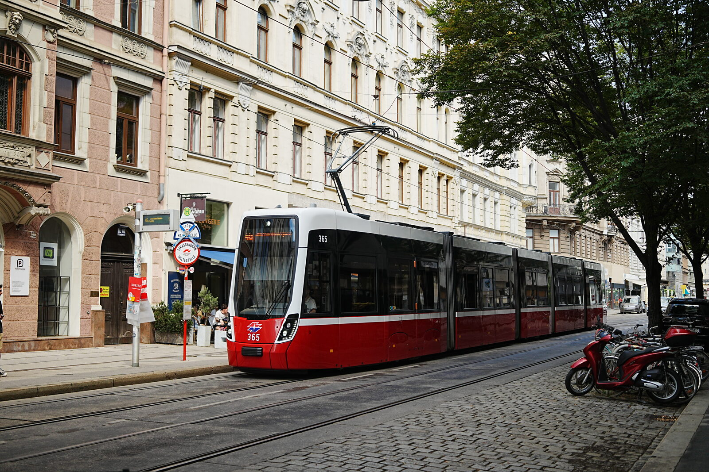

Originally from Bangladesh, now studying and shooting in Vienna — I make images out of streets, architecture, and quiet, unremarkable moments.
Street, architecture, and quiet corners of Vienna — shot while walking between classes.










I'm Al Nafis Fuad Shuvo, an international student from Bangladesh, currently based in Vienna, Austria.
I'm pursuing an MSc in Digital Economy at WU Wien. Photography is what I do between lectures and commutes — mostly street scenes, campus life, architecture, and quiet corners of the city I keep discovering as I settle in here.
Write a line or two here about what you're looking for next — collaborations, campus shoots, or just sharing more of the city as you see it.